Modellauswahl¶
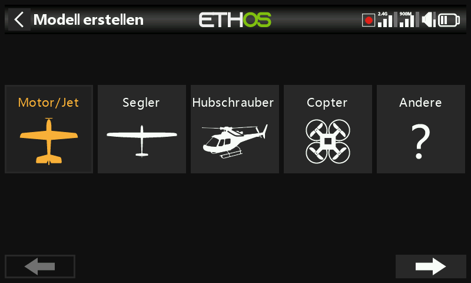
Erstellt, wählt, klont und löscht Modelle und verwaltet die benutzerdefinierten Kategorieordner, in denen sie organisiert sind.
Modellordner verwalten¶
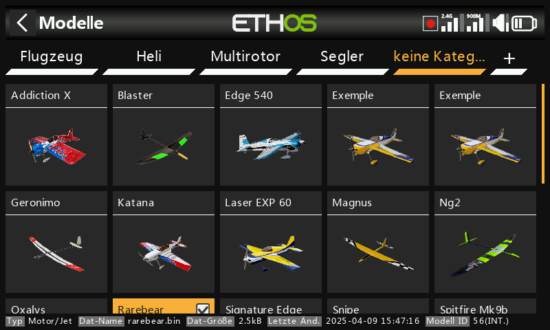
Ethos ermöglicht es, Modelle in eigenen Ordnern zu gruppieren – typischerweise
etwa Flugzeug, Segler, Heli, Quad, Warbird, Boot, Auto, Vorlage oder Archiv.
Solange kein Ordner angelegt ist, liegen die Modelle in einem automatischen
Ordner Uncategorized (wird beim Upgrade auf Ethos 1.1.0 alpha 17+ oder
beim Kopieren einer Modelldatei aus anderer Quelle nach \Models erstellt);
Ethos löscht ihn wieder, sobald er leer ist.
Um einen Ordner zu erstellen, tippen Sie auf + neben „Uncategorized“ (oder
halten Sie PAGE auf/ab gedrückt), vergeben einen Namen (bis zu 15 Zeichen)
und bestätigen. Ordner werden alphabetisch sortiert, wobei Uncategorized
immer zuletzt steht, und entsprechen direkt den Unterordnern unter \Models
auf der SD card/eMMC. Ein Tippen auf einen Ordnernamen öffnet
Umbenennen/Löschen – beim Löschen eines Ordners werden alle darin enthaltenen
Modelle zurück nach Uncategorized verschoben.
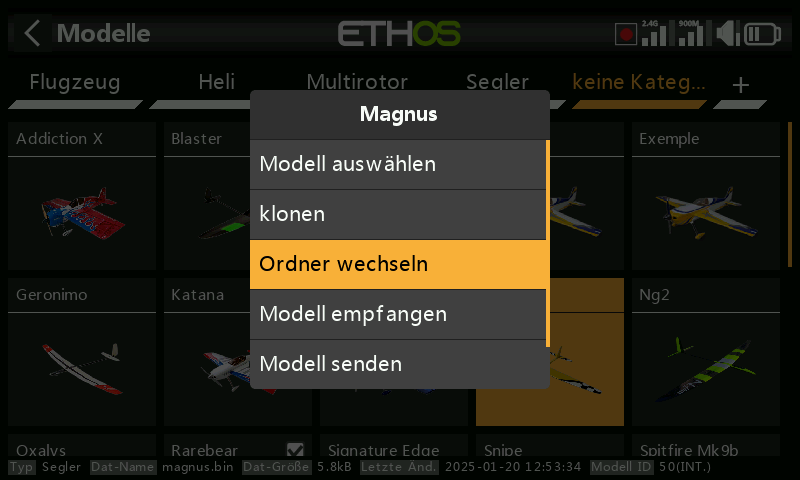
Um ein Modell zu verschieben, tippen Sie auf sein Symbol, wählen Ordner wechseln und tippen anschließend auf das Ziel:
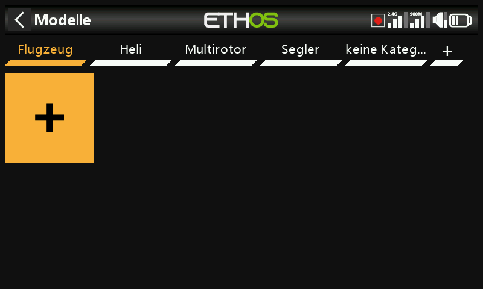
Ein neues Modell anlegen¶
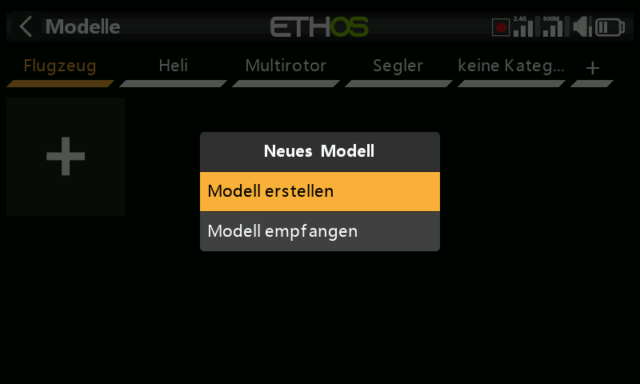
Wählen Sie die Kategorie, in der das Modell erstellt werden soll, tippen Sie auf + und dann auf Modell erstellen, um den Assistenten zu starten (legen Sie die Kategorie zuvor an, falls sie noch nicht existiert). Assistenten gibt es für Flugzeug, Segler, Hubschrauber, Multirotor und Sonstiges; jeder führt durch die Grundeinstellungen des jeweiligen Modelltyps, einschließlich optionaler vorbereiteter Mischer für stabilisierte FrSky-Empfänger (Gain, Stabilisierungsmodus). Modellnamen dürfen bis zu 15 Zeichen lang sein.
Stabilisierte Empfänger und Kanalreihenfolge¶
Stabilisierte FrSky-Empfänger benötigen zwingend die Kanalreihenfolge AETR – belassen Sie Steuerknüppel → Kanalreihenfolge auf der Vorgabe AETR mit aktivierter Option Erste vier Kanäle fest, damit die Ausgabe des Assistenten dem entspricht, was der Empfänger erwartet.
Der Assistent vergibt die Kanäle von rechts nach links. Für 2 Querruder + 1 Höhenruder + 1 Seitenruder + 1 Motor ergibt sich:
| Kanal | Funktion |
|---|---|
| 1 | Querruder 1 (rechtes Querruder) |
| 2 | Höhenruder |
| 3 | Gas |
| 4 | Seitenruder |
| 5 | Querruder 2 (linkes Querruder) |
Mit dieser Zuordnung ist das Querruder-Differential im Normalfall positiv (mehr Ausschlag nach oben als nach unten). Die FrSky-Empfängeranleitungen dokumentieren derzeit die umgekehrte Konvention (von links nach rechts, also Kanal 1 = linkes Querruder, Kanal 5 = rechtes Querruder) – in diesem Fall müsste das Differential für denselben physikalischen Effekt negativ sein.
Tip
Es wird empfohlen, durchgängig die Ethos-Konvention zu verwenden – alle Stabilisierungsfunktionen arbeiten in beiden Fällen korrekt, da die Kompensationsrichtung bei der Stabilisierungseinrichtung festgelegt wird. Falls Sie die Konvention der Empfängeranleitung dennoch übernehmen müssen, ist der einfachste Weg, das Modell wie gewohnt mit dem Assistenten zu erstellen und anschließend über Kanäle tauschen in den Ausgängen die beiden Querruderkanäle zu vertauschen – so bleibt das Vorzeichen des Differentials im Querrudermischer positiv.
Schritte des Assistenten¶
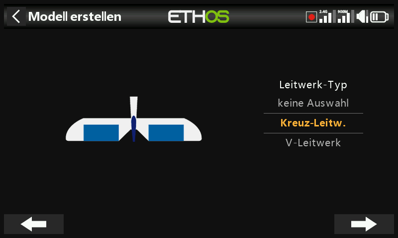
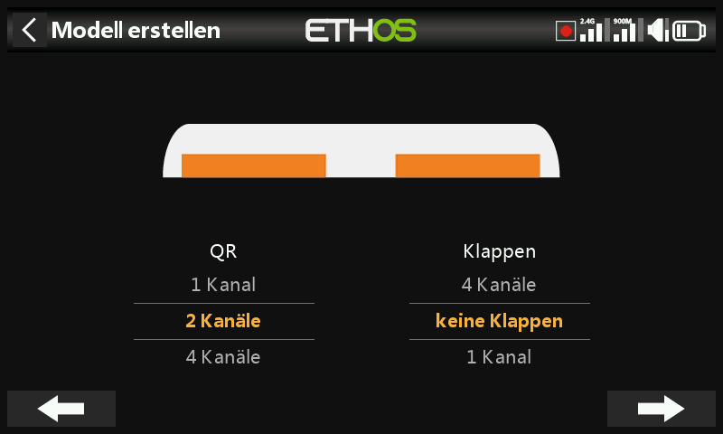
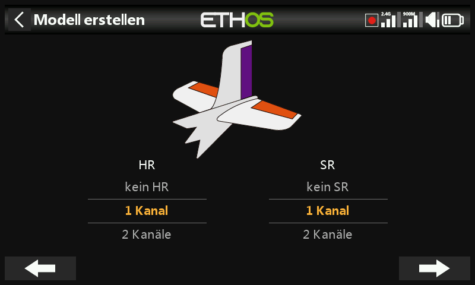
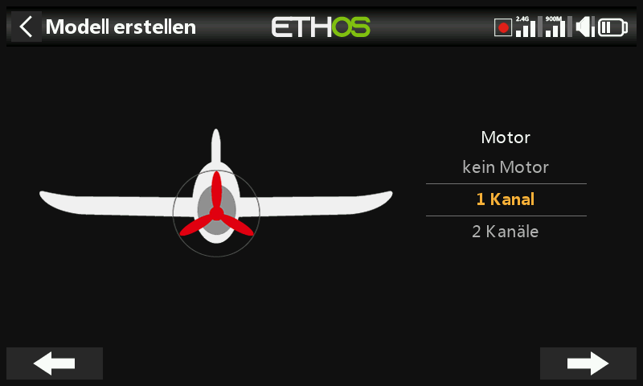
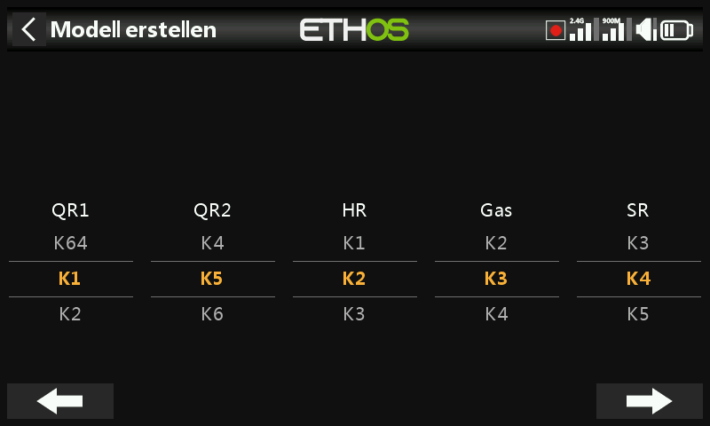
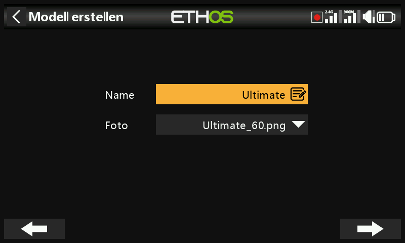
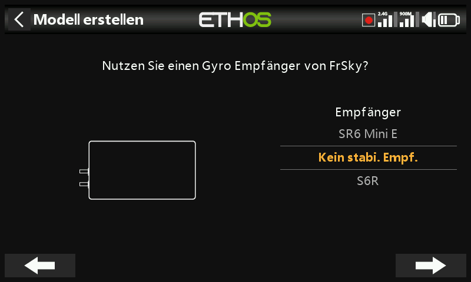
Bei einem Flugzeug folgen nach Leitwerkstyp und Ruderanzahl die Anzahl der Motorkanäle und danach die Anzahl der Querruder-/Klappenkanäle.
Bei der Leitwerkskonfiguration stehen klassisches Kreuzleitwerk, V-Leitwerk oder kein Leitwerk (Delta/Nurflügel) zur Auswahl:
- Delta/Nurflügel – wird ein Flugzeugmodell mit 2 Querrudern und ohne Leitwerksflächen erstellt, richtet Ethos automatisch die Elevon-Mischung ein, mit Standardgewichtungen von 50 %, sodass volle gleichzeitige Querruder- und Höhenruderbefehle weiterhin insgesamt 100 % ergeben.
- Delta mit einem stabilisierten Empfänger, der die Mischung übernimmt – wählen Sie stattdessen 1 Querruder und 1 Höhenruder; die Elevon-Mischung erfolgt gemäß der Empfängeranleitung im Empfänger.
- Delta mit separaten Querruder- und Höhenruderflächen – lassen Sie den Assistenten so laufen, als hätte das Modell ein Leitwerk; er konfiguriert die benötigten Querruder- und Höhenruderkanäle (mit oder ohne Seitenruder), und es wird keine Elevon-Mischung angelegt.
Im Schritt Kanalneuzuordnung können Sie die Standardzuordnung des Assistenten überschreiben – beachten Sie dabei, dass stabilisierte Empfänger ihre Kanäle in einer bestimmten Reihenfolge benötigen (siehe die Anleitung des jeweiligen Empfängers). Im letzten Schritt werden der Modellname vergeben und ein Bild verknüpft.
Das fertige Modell landet in dem Kategorieordner, der beim Start des Assistenten aktiv war, und wird dort alphabetisch einsortiert. Eine vollständige Schritt-für-Schritt-Anleitung finden Sie unter Einfaches Flächenmodell – Beispiel.
Ein Modell von einem anderen Ethos-Sender empfangen¶
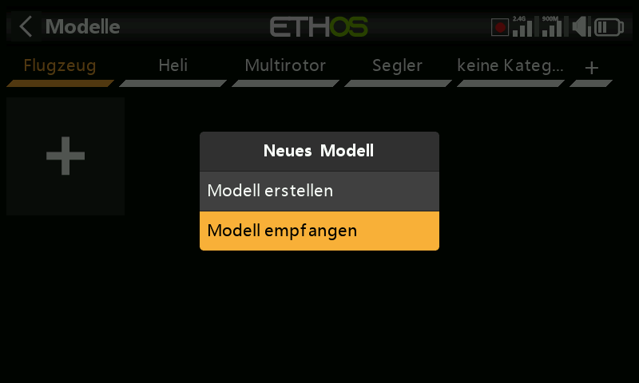
Wählen Sie die Zielkategorie, tippen Sie auf + und dann auf Modell empfangen – der Sender wartet und zeigt seine Bluetooth-Adresse an, damit der sendende Sender ihn finden kann. Tippen Sie auf dem sendenden Sender auf das Modell und wählen Sie Modell senden; der empfangende Sender bestätigt den eingehenden Dateinamen, bevor er ihn annimmt.
Ein Modell auswählen¶
Tippen Sie auf Modellauswahl, um die Modellliste zu öffnen.
Modellkonvertierung nach einem Ethos-Upgrade
Ethos konvertiert jedes Modell einzeln, wenn es nach einem Versionsupgrade erstmals ausgewählt wird, nicht alle Modelle auf einmal beim Upgrade – dabei entsteht keine spürbare Verzögerung, und die Konvertierung kann problemlos zu einem späteren Zeitpunkt erfolgen, auch unter einer noch neueren Ethos-Version. Das Datum Letzte Änderung am unteren Rand des Auswahlbildschirms wird aktualisiert, wenn eine Konvertierung stattfindet (oder wenn Sie das Modell bearbeiten – andernfalls bleibt es unverändert).
Schnellauswahl – ein langer Fingerdruck oder langes ENT auf einem
Modellsymbol wechselt sofort zu diesem Modell.
Modellverwaltungsmenü – tippen Sie auf ein Modell, um es zu markieren, und tippen Sie erneut, um das Menü zu öffnen:
- Als aktuelles Modell setzen
- Klonen – dupliziert das Modell. Ein Klon erhält automatisch eine neue Empfängernummer; wenn Sie stattdessen die Empfängernummer des Originals übernehmen, funktioniert es ohne erneutes Binden.
- Ordner wechseln
- Senden/Empfangen – an bzw. von einem anderen Sender, wie oben beschrieben.
- Löschen – wird nur für ein Modell angeboten, das nicht das aktuelle ist.